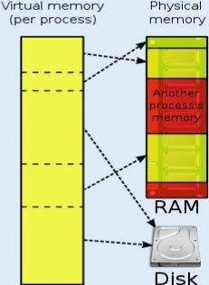

Among other things, a multiprogramming operating system kernel must be responsible for managing all system memory which is currently in use by programs. This ensures that a program does not interfere with memory already in use by another program. Since programs time share, each program must have independent access to memory.
Cooperative memory management, used by many early operating systems, assumes that all programs make voluntary use of the kernel's memory manager, and do not exceed their allocated memory. This system of memory management is almost never seen any more, since programs often contain bugs which can cause them to exceed their allocated memory. If a program fails, it may cause memory used by one or more other programs to be affected or overwritten. Malicious programs or viruses may purposefully alter another program's memory, or may affect the operation of the operating system itself. With cooperative memory management, it takes only one misbehaved program to crash the system.
Memory protection enables the kernel to limit a process' access to the computer's memory. Various methods of memory protection exist, including memory segmentation and paging. All methods require some level of hardware support (such as the 80286MMU), which doesn't exist in all computers.
In both segmentation and paging, certain protected mode registers specify to the CPU what memory address it should allow a running program to access. Attempts to access other addresses trigger an interrupt which cause the CPU to re-enter supervisor mode, placing the kernel in charge. This is called a segmentation violation or Seg-V for short and since it is both difficult to assign a meaningful result to such an operation, and because it is usually a sign of a misbehaving program, the kernel generally resorts to terminating the offending program, and reports the error.
Windows versions 3.1 through ME had some level of memory protection, but programs could easily circumvent the need to use it. A general protection fault would be produced, indicating a segmentation violation had occurred; however, the system would often crash anyway.
The use of virtual memory addressing (such as paging or segmentation) means that the kernel can choose what memory each program may use at any given time, allowing the operating system to use the same memory locations for multiple tasks. If a program tries to access memory that isn't in its current range of accessible memory, but nonetheless has been allocated to it, the kernel is interrupted in the same way as it would if the program were to exceed its allocated memory. (See section on memory management.) Under UNIX this kind of interrupt is referred to as a page fault.
When the kernel detects a page fault it generally adjusts the virtual memory range of the program which triggered it, granting it access to the memory requested. This gives the kernel discretionary power over where a particular application's memory is stored, or even whether or not it has actually been allocated yet.
In modern operating systems, memory which is accessed less frequently can be temporarily stored on disk or other media to make that space available for use by other programs. This is called swapping, as an area of memory can be used by multiple programs, and what that memory area contains can be swapped or exchanged on demand. “Virtual memory" provides the programmer or the user with the perception that there is a much larger amount of RAM in the computer than is really there.
